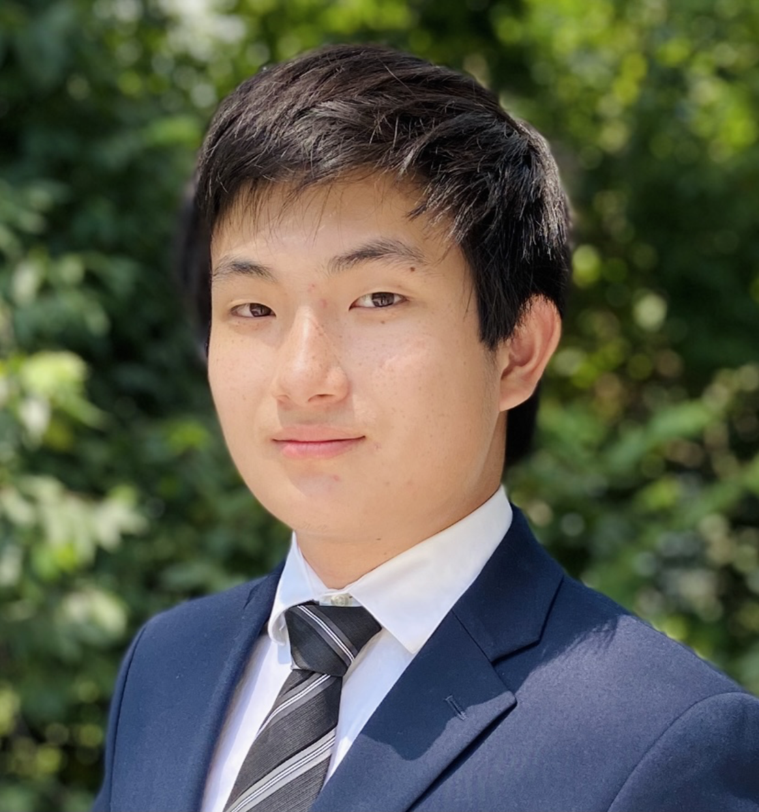

About

Hi! My name is Andrew. I am an undergraduate student at Brown University studying applied math, computer science, and biology. I am passionate about leveraging statistics and machine learning to extract meaningful insights from biological data. My research interests are at the intersection of biostatistics and computational biology.
Current Endeavors
Research:
- Data science at Regeneron
- Biostatistics methodology research at the Brown University Center for Computational Molecular Biology
- Clinical AI research at the Orthopaedic Machine Learning Laboratory
Teaching:
- Head TA for Computational Probability and Statistics
Contact
Please feel free to email me at andrew_j_yang@brown.edu.